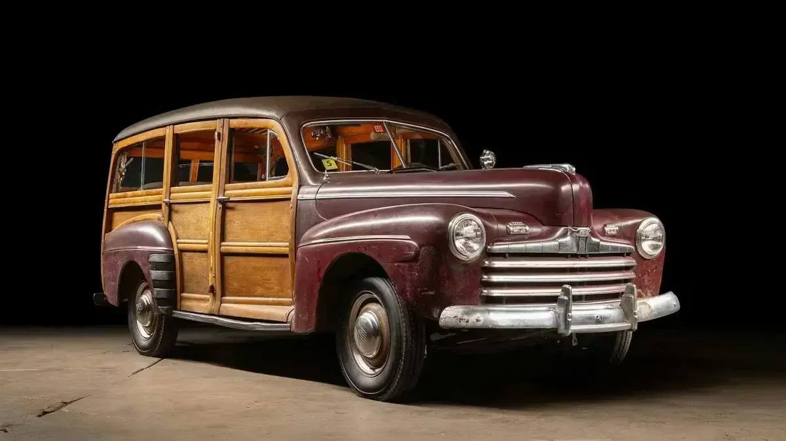
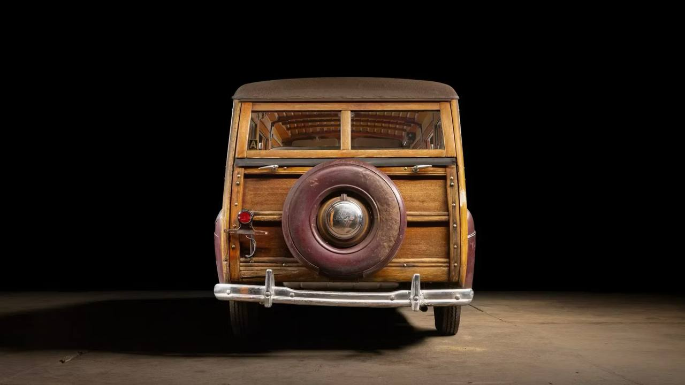
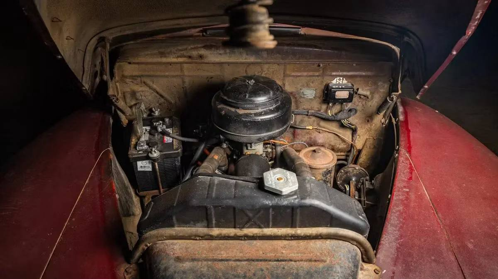
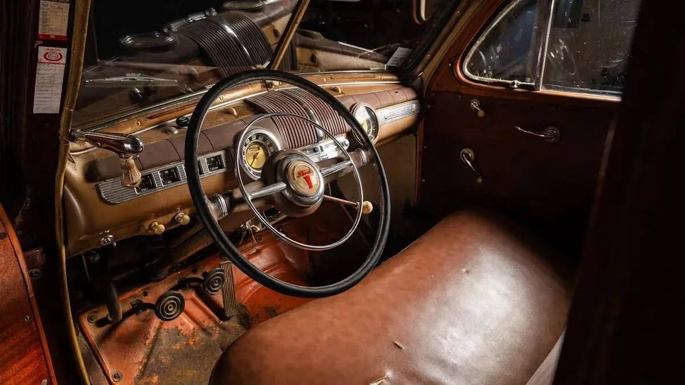

Тачки и Точка
@tachki
Тачки и Точка
@tachki
Редкий Ford Super Deluxe Station Wagon 1946 года выставили на торги это тот самый олдскульный пикап с настоящим деревянным кузовом.




Редкий Ford Super Deluxe Station Wagon 1946 года выставили на торги — это тот самый олдскульный пикап с настоящим деревянным кузовом.
Ford выпускал такие универсалы ещё с 1929 года: ими встречали поезда и возили багаж с вокзалов. Генри Форд даже владел огромными лесными угодьями и отдельным производством, где деревянные кузова собирали вручную. Последний Woodie сошёл с конвейера в 1951-м.
Этот экземпляр долго ездил по северо-востоку США, а после 1990-х отправился в гараж на хранение. С 2023 по 2026 год его технически восстановили: обновили проводку, тормоза, подвеску, выхлоп и другие узлы, но оригинальные кузов и салон сохранили.
Под капотом 3,9-литровый V8 и трёхступенчатая механика с рычагом на рулевой колонке. Сейчас ставка — $8,5 тысячи (₽710 тысяч), но торги ещё идут.
🚙 Тачки и Точка
Ford выпускал такие универсалы ещё с 1929 года: ими встречали поезда и возили багаж с вокзалов. Генри Форд даже владел огромными лесными угодьями и отдельным производством, где деревянные кузова собирали вручную. Последний Woodie сошёл с конвейера в 1951-м.
Этот экземпляр долго ездил по северо-востоку США, а после 1990-х отправился в гараж на хранение. С 2023 по 2026 год его технически восстановили: обновили проводку, тормоза, подвеску, выхлоп и другие узлы, но оригинальные кузов и салон сохранили.
Под капотом 3,9-литровый V8 и трёхступенчатая механика с рычагом на рулевой колонке. Сейчас ставка — $8,5 тысячи (₽710 тысяч), но торги ещё идут.
🚙 Тачки и Точка